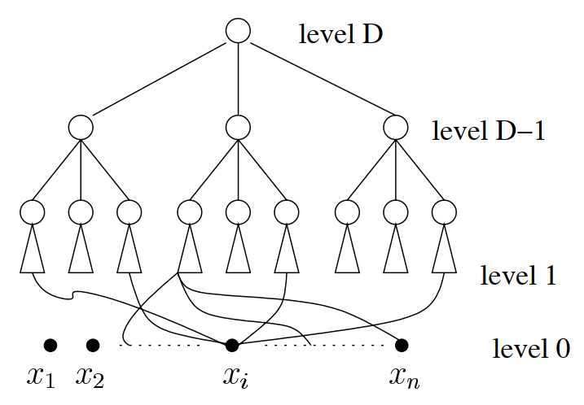

Lecture 5 - 2025 / 3 / 3
Monotone Circuits for the Majority Function
Definition (Boolean circuit): f:{0,1}n→{0,1}，通过门进行计算，每个门即 {0,1}2→{0,1} 的函数（共 16 种门）。
Claim: 几乎所有 n 个输入的 Boolean function 需要 Ω(2n/n) 个门（包括输入门）。
首先 n 个输入的 Boolean function 有 22n 种。
考虑 S 个门能够表达多少种 Boolean function。首先每个门可以选择 S2 种输入，以及自身有 16 种计算方法，故函数数量不超过 (16S2)S。
将 S 用 16n2n 带入，由于
Sln(16S2)=16n2nln(16⋅162n24n)=16n2n(−ln16+nln4−2lnn)=2n8ln2+⋯
另一方面 ln22n=2nln2，因此 S<16n2n 时，n→∞lim22n(16S2)S=0。
Definition (monotone circuits): 一个电路是单调的，当且仅当它的所有门都是单调函数，即：
f(x1,⋯,xn)=1,∀i,yi≥xi⇒f(y1,⋯,yn)=1
现在考虑众数函数 Majn(x1,⋯,xn)，试图找到一个单调电路来实现它。
一个最优的实现 Maj3 的电路为（因为只用到了单调的 ∧,∨，故这个电路也是单调的）：
(x1∧(x2∨x3))∨(x2∧x3)
Theorem: 存在一个单调电路计算 Majn，n 为奇数，门的数量是 poly(n)，深度是 O(logn)。

考虑一个随机电路 C，包含 D=O(logn) 层的 Maj3，底层每个 Maj3 随机从 x1,⋯,xn 中选择 3 个输入。
不妨设众数为 1，那么底层每个门输入 1 的概率至少为 p0=2nn+1=21+2n1。
如果一个 Maj3 的每个输入有 p 的概率为 1，那么其输出为 1 的概率为
f(p)=p3+3p2(1−p)=3p2−2p3
考虑迭代过程 p1=f(p0),p2=f(p1),⋯，目标为证明在 O(logn) 次迭代后，p≥1−2−(n+1)，从而根据 union bound，Pr[∃x,C(x)=Majn(x)]≤2n⋅2−(n+1)=21，根据概率方法立刻得证。
-
第一阶段，21+2n1≤pt≤43，由于步长增大，计算得
(pt+1−21)≥811(pt−21)
故在 O(logn) 步内，pt 可以达到 43。
-
第二阶段：pt≥43，设第一次达到这个要求为 pt0，则：
(1−pt+1)≤3(1−pt)2≤3(1−pt0)2t+1−t0≤42t+1−t03
故在 O(logn) 步内，pt 可以达到 1−2n+11。
从而总共只需 D=O(logn) 次迭代即可。